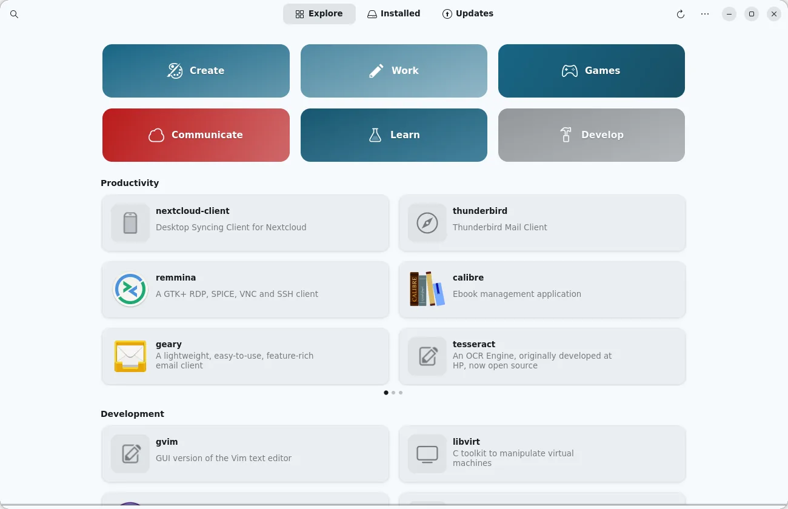
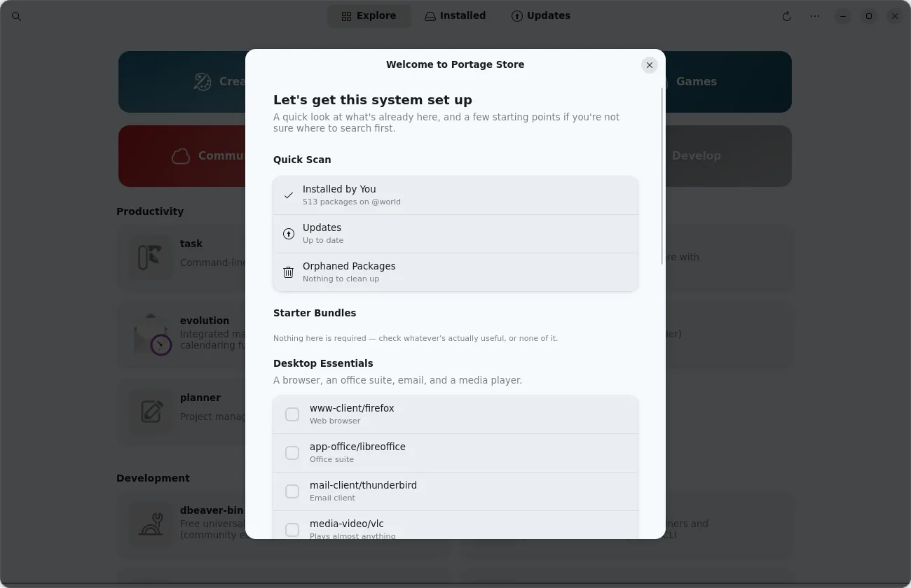
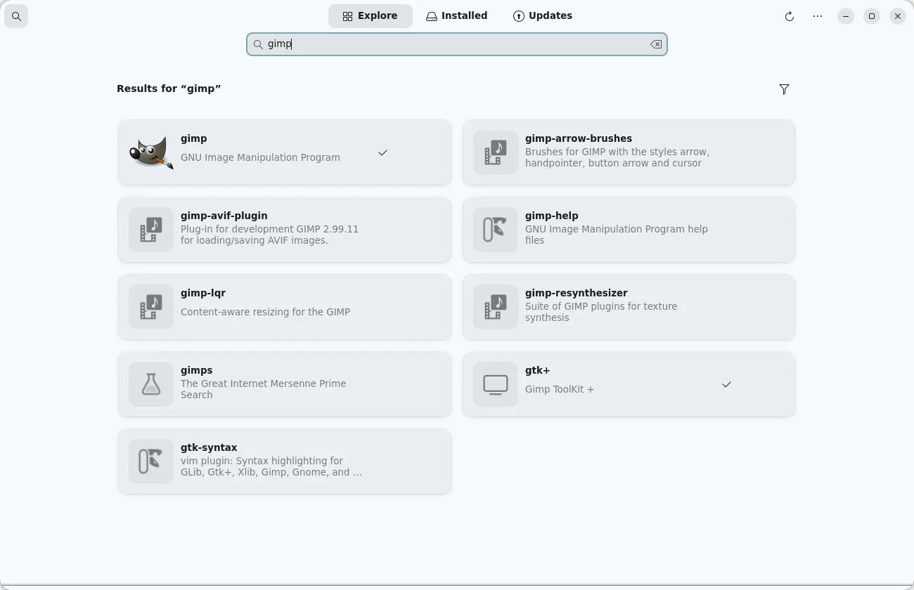
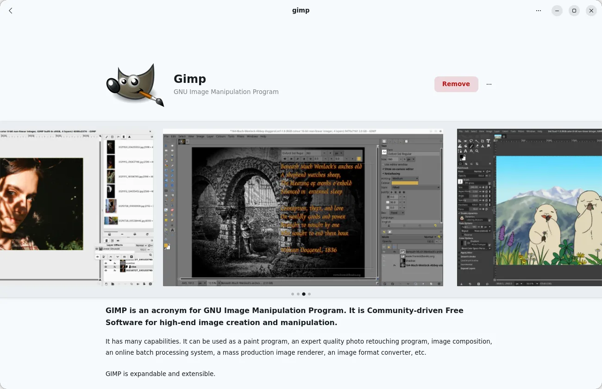
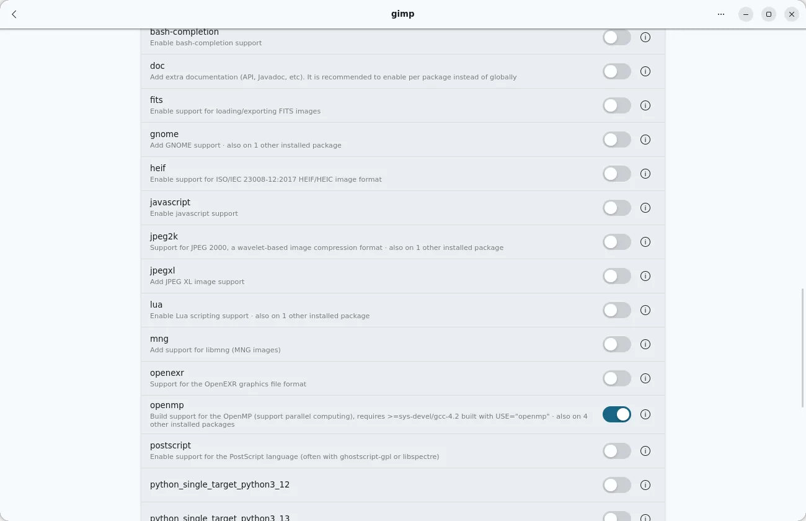
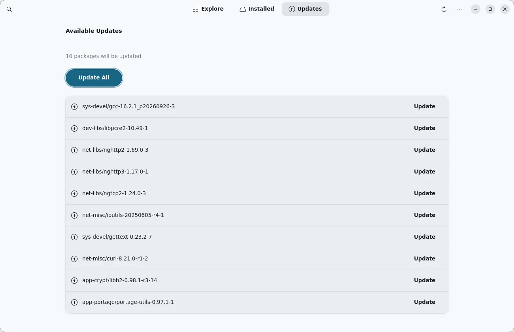

Projects /
Portage Store
A GTK4 application store for Portage, with a job queue, health checks and a CLI on the same core.
What it is
Portage Store is a GTK4/libadwaita application store for Gentoo's Portage package manager, plus a terminal companion that shares the same core. You can search and install packages, watch builds stream live in a job queue, and get told about the things Gentoo expects you to remember to check yourself: security advisories, unread news, pending config updates, a stale tree and orphaned packages. It is written in Rust and ships in the Simple Linux GUI image.
It works and I use it daily on my own system, but it is young. The privilege model is deliberately documented rather than hidden, and you should read that section below before installing.

Features
Finding things
- A whole-tree in-memory index. The first search parses one full
eix --xmldump (about 22k packages), roughly 600 ms once and about 2 ms per search after that. It is dropped and rebuilt only when a sync completes. - Name and description search, typo suggestions through a Levenshtein pass, and operators such as
cat:games-*,use:wayland,installed:trueand@world.
Installing and managing
- One job queue. Portage takes a global lock, so one
emergeruns at a time and the rest wait, reorderable and cancellable. The queue can be exported as a POSIX shell script, one invocation per job, in run order. - Automatic conflict resolution. A failed build that needs a USE flag, a keyword, a licence acceptance or a circular-dependency break is detected, explained and offered as apply-and-retry.
- Toolchain warning before an update that touches
gcc,glibcor similar, because it commonly cascades into rebuilding everything linked against it. - Live build output with a log drawer, an errors-only filter and searchable history; ETAs from
qlop's merge history. - Resource throttling (on by default):
nice/ioniceand a RAM-awareMAKEOPTScap. I added it after an unthrottled build OOM-killed unrelated processes during development. Night-only builds are opt-in. - Sandbox builds for a package the live resolver will not touch (a hard mask, keyword mask or conflict): built in a disposable, throttled chroot with the live tree bind-mounted read-only. The result lands in the host's binary-package cache. Downgrades install from a locally cached binary package with
--usepkgonly. - Flatpak as a second, independent job lane, so a Flatpak update never waits behind a long
@worldrebuild.
Knowing what is wrong
- GLSA security advisories through
glsa-checkwith a one-click fix, unread Gentoo news, pendingCONFIG_PROTECTupdates with an inline diff reviewer, sync staleness, preserved-rebuild and orphaned packages. - A health dashboard combining these, with optional background checks and trend history.
Understanding a package
- Dependency preview, download size, compile versus prebuilt, and reverse dependencies ("why is this installed?"), bounded on depth, fan-out and subprocess calls so one click on
glibcannot spawn thousands. - A USE flag editor showing where each flag's current value comes from, plus man page, upstream AppStream metadata and Gentoo wiki and Bugzilla mentions where they exist.
Sharing a setup and configuring
- Presets (USE flags plus a starter package list, exportable as JSON) and profile bundles (
@worldplus every file under/etc/portage, with a diff shown before an import changes anything). - Pages for overlays,
make.conf,package.env, kernel selection, profile switching and binary-package repositories. Every write under/etc/portageis committed to a git repo there, browsable and revertible from the GUI.





The screenshots were taken in the Simple Linux live session in a virtual machine.
Architecture
Three pieces, one direction of dependency. A GTK4 GUI (portage-store) and a clap-based CLI (portage-store-cli) both sit on a library with no GTK and no UI state, which in turn drives eix, emerge, qlop, glsa-check, flatpak, the privilege helper and the files under /etc/portage and /var/db/pkg.
src/portage/,src/backend.rs,src/flatpak.rsare the domain layer: parsingeix --xml, buildingemergeargv, reading@world, writingpackage.use. Plain functions returning plain structs, with nogtkoradwreferences. That is what made the CLI cheap to add.src/ui/is all the GTK, split by area, one file per dialog.src/bin/portage-store-cli.rsis the terminal front end; every subcommand is a thin wrapper over the functions the GUI calls.
The privilege model
Everything privileged goes through one root-owned script, reachable by a passwordless doas rule scoped to exactly that path. This is a deliberate trade-off.
There is no password prompt. Nothing stands between "the app asked for this" and "it happened as root". In exchange, the attack surface is kept narrow: privileged calls never carry script text, only a subcommand name and arguments; the helper re-validates every path on the root side (after canonicalisation, against symlink-swap races) and uses an allowlist of runnable binaries; and every privileged call is logged by root to /var/log/portage-store/priv-helper.log, which the GUI has a page to read. Read resources/priv-helper.sh before installing; it is written to be read.
Installing and using it
It needs Rust 1.92 or newer, GTK 4.12+ and libadwaita 1.5+ to build, and at runtime emerge, eix (run eix-update first), equery, qlop, eselect, doas and optionally flatpak.
git clone https://github.com/tarilka0gg/portage-store.git
cd portage-store
cargo build --releaseThen set up the privilege helper, which is required: without it anything that writes to the system fails.
sudo mkdir -p /usr/libexec/portage-store
sudo install -m 0755 -o root -g root resources/priv-helper.sh \
/usr/libexec/portage-store/priv-helper
sudo install -m 0755 -o root -g root resources/sandbox-build.sh \
/usr/libexec/portage-store/sandbox-build.sh
# then create the audit log under /var/log/portage-store (see the README)
echo "permit nopass $USER cmd /usr/libexec/portage-store/priv-helper" \
| sudo tee -a /etc/doas.confThe CLI uses the same core:
portage-store-cli search firefox
portage-store-cli install app-misc/tmux --pretend
portage-store-cli update-world --pretend
portage-store-cli preset apply "Minimal Server"Mutating commands stream emerge output live and exit non-zero on failure. The in-app web preview is behind an off-by-default webview feature, because WebKitGTK is one of the slowest packages on Gentoo to build and the app does not need it.
What was tested and what was not
cargo test runs 255 tests with no live system required. Tests never touch a real subprocess: parsers are fed captured fixtures, and the two places that interleave subprocess calls with logic (priv_write.rs and reverse_deps.rs) use a CommandRunner trait with a fake implementation, so the suite passes on a non-Gentoo machine. CI builds and tests on GitHub. Beyond that, I use the app daily on my own system.
Known limits: the Gentoo packaging in packaging/ (an ebuild aimed at GURU) is a work in progress, not submitted and not yet correct; its README lists what has to be fixed first, including a mismatch between the ebuild's helper path and the compiled-in constant. The privilege helper is built around doas.
Links
Source (GPL-2.0), releases, changelog. Related: Simple Linux, which ships it, the installer that copies it to the target, and ustan.